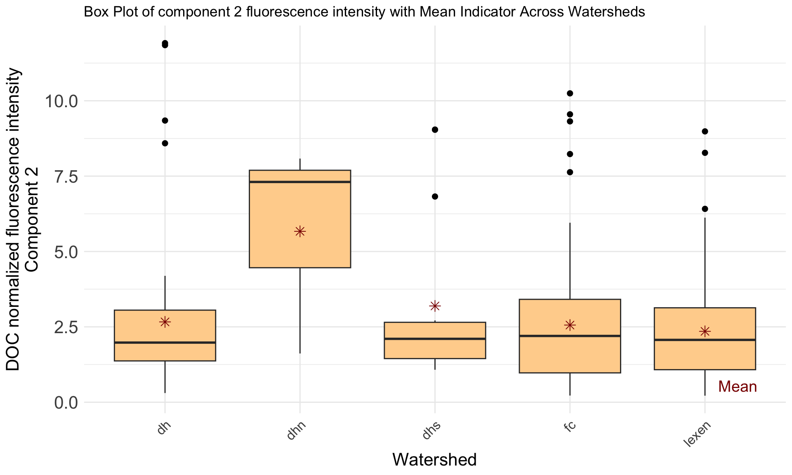
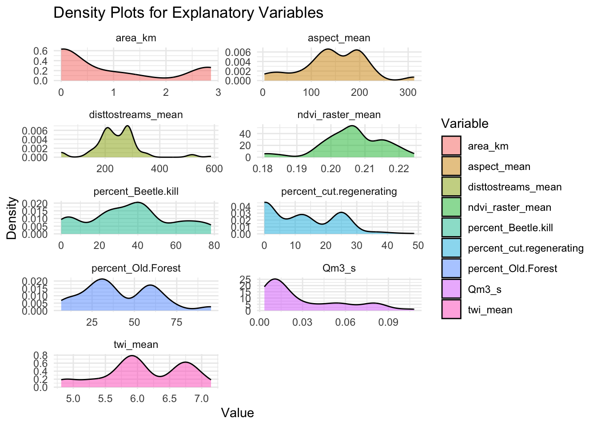
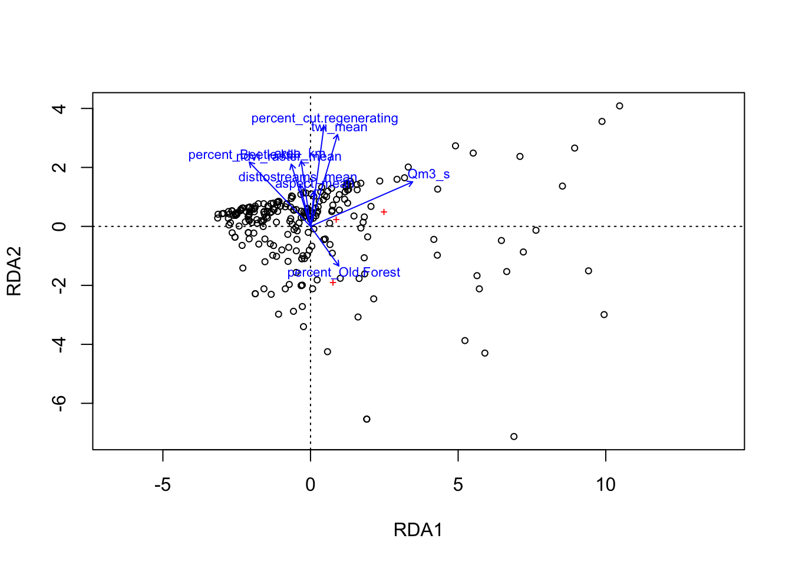

3.5 RDA (Redundancy Analysis)
-If explanatory variables must be centered, standardized, transformed or normalized
So these are all quantitative variables with different units and numerical ranges. Standardization transforms the variables so they have a mean of zero and a standard deviation of one.
# Standardizing the environmental variables
explanatory_standardized <- as.data.frame(scale(explanatory_matrix, center = TRUE, scale = TRUE))Let’s view the distributions of standardized response variables:
Our response variables are right-skewed unimodal. We need to make the data more symmetrical or approximately normal, as RDA assumes linear relationships between variables. In the case of a right-skew, we can log transform to compress the long right tails and spread out lower values.
response_long <- transf_response %>%
pivot_longer(cols = everything(), names_to = "Variable", values_to = "Value")
# Plot density plots for each variable
ggplot(response_long, aes(x = Value, fill = Variable)) +
geom_density(alpha = 0.5) + # Add transparency for overlapping densities
facet_wrap(~ Variable, scales = "free", ncol = 2) + # Create separate panels per variable
theme_minimal() +
labs(title = "Density Plots for Explanatory Variables",
x = "Value", y = "Density") Ok, these are approximately normal. The scales are similar, the units are the same. I am not sure if we want to standardize/z-score these as well. This can ensure that they contribute equally to the analysis…lets try both and see if scaling makes a difference:
scaled:
# Standardize the transformed response data
standardized_resp <-scale(transf_response)
# the RDA model
myrda <- rda(standardized_resp ~ ., data = explanatory_standardized, na.action = na.exclude)
# Plot the RDA result
plot(myrda)
## Call: rda(formula = standardized_resp ~ aspect_mean + twi_mean + ndvi_raster_mean +
## disttostreams_mean + percent_Beetle.kill + percent_Old.Forest + percent_cut.regenerating +
## area_km + Qm3_s, data = explanatory_standardized, na.action = na.exclude)
##
## -- Model Summary --
##
## Inertia Proportion Rank
## Total 3.1161 1.0000
## Constrained 0.3609 0.1158 3
## Unconstrained 2.7552 0.8842 3
##
## Inertia is variance
##
## -- Note --
##
## 20 observations deleted due to missingness
##
## -- Eigenvalues --
##
## Eigenvalues for constrained axes:
## RDA1 RDA2 RDA3
## 0.23129 0.12801 0.00165
##
## Eigenvalues for unconstrained axes:
## PC1 PC2 PC3
## 2.4113 0.3132 0.0307Constrained variance (0.009048, 48.1%): This is the portion of the total variance in the response matrix explained by the explanatory variables (e.g., area, slope, NDVI, etc.). i.e., variables explain around 48% of the variation the PARAFAC component fractions.
Unconstrained variance (0.009779, 51.9%): This is not explained by the predictors, so less than half of the variation is not explained by the model.
This returns the note Some constraints or conditions were aliased because they were redundant. This can happen if terms are linearly dependent (collinear): ‘percent_Tundra’.
-Similar to PCA, but it is a constrained method that requries two datasets, one for response variables (e.g., PARAFAC component fractions) and one for explanatory variables (watershed characteristics)
RDA identifies the portion of the variation in the response dataset that can be explained by the explanatory variables. So this tells us how much of the variability in the response variables is explained by the predictors.
# the RDA model
myrda <- rda(response_matrix ~ ., data = explanatory_matrix, na.action = na.exclude)
# Plot the RDA result
plot(myrda)
## Call: rda(formula = response_matrix ~ aspect_mean + twi_mean + ndvi_raster_mean +
## disttostreams_mean + percent_Beetle.kill + percent_Old.Forest + percent_cut.regenerating +
## area_km + Qm3_s, data = explanatory_matrix, na.action = na.exclude)
##
## -- Model Summary --
##
## Inertia Proportion Rank
## Total 57.25590 1.00000
## Constrained 5.60843 0.09795 3
## Unconstrained 51.64747 0.90205 3
##
## Inertia is variance
##
## -- Note --
##
## 20 observations deleted due to missingness
##
## -- Eigenvalues --
##
## Eigenvalues for constrained axes:
## RDA1 RDA2 RDA3
## 3.696 1.907 0.006
##
## Eigenvalues for unconstrained axes:
## PC1 PC2 PC3
## 45.71 5.65 0.29##
## Call:
## rda(formula = response_matrix ~ aspect_mean + twi_mean + ndvi_raster_mean + disttostreams_mean + percent_Beetle.kill + percent_Old.Forest + percent_cut.regenerating + area_km + Qm3_s, data = explanatory_matrix, na.action = na.exclude)
##
## Partitioning of variance:
## Inertia Proportion
## Total 57.256 1.00000
## Constrained 5.608 0.09795
## Unconstrained 51.647 0.90205
##
## Eigenvalues, and their contribution to the variance
##
## Importance of components:
## RDA1 RDA2 RDA3 PC1 PC2 PC3
## Eigenvalue 3.69610 1.90662 5.708e-03 45.7081 5.65249 0.286916
## Proportion Explained 0.06455 0.03330 9.969e-05 0.7983 0.09872 0.005011
## Cumulative Proportion 0.06455 0.09785 9.795e-02 0.8963 0.99499 1.000000
##
## Accumulated constrained eigenvalues
## Importance of components:
## RDA1 RDA2 RDA3
## Eigenvalue 3.696 1.907 0.005708
## Proportion Explained 0.659 0.340 0.001018
## Cumulative Proportion 0.659 0.999 1.000000
# RDA result from the rda() function
rda_loadings <- as.data.frame(myrda$CCA$biplot)
# Extract loadings for RDA1 and RDA2
rda1_loadings <- data.frame(
variable = rownames(rda_loadings),
RDA1_Loading = rda_loadings[, 1]
)
rda2_loadings <- data.frame(
variable = rownames(rda_loadings),
RDA2_Loading = rda_loadings[, 2]
)
# Plot RDA1 loadings
ggplot(rda1_loadings, aes(x = reorder(variable, RDA1_Loading), y = RDA1_Loading)) +
geom_bar(stat = "identity", fill = "darkblue") +
coord_flip() +
theme_minimal() +
labs(title = "RDA1 Loadings", x = "Variables", y = "RDA1 Loading")
# Plot RDA2 loadings
ggplot(rda2_loadings, aes(x = reorder(variable, RDA2_Loading), y = RDA2_Loading)) +
geom_bar(stat = "identity", fill = "lightgreen") +
coord_flip() +
theme_minimal() +
labs(title = "RDA2 Loadings", x = "Variables", y = "RDA2 Loading")